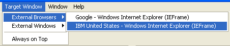
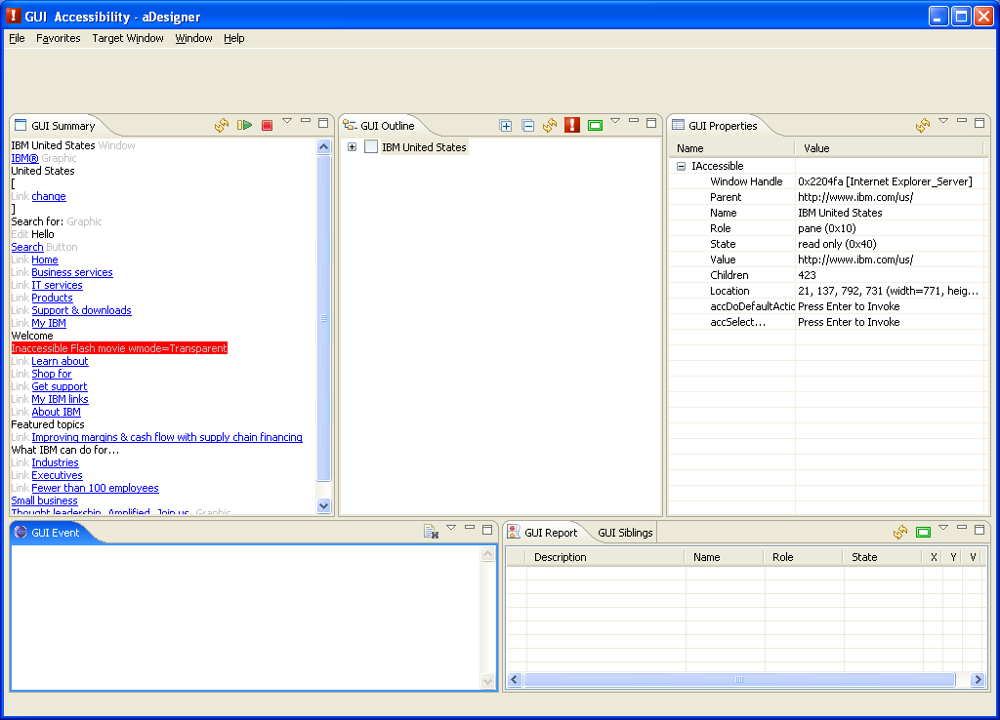
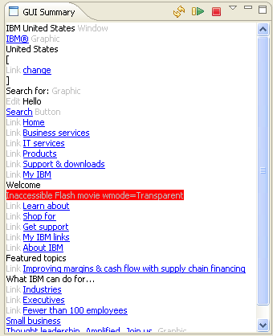
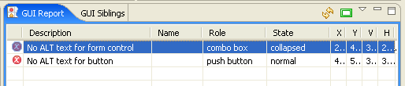
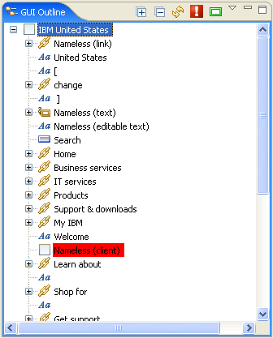
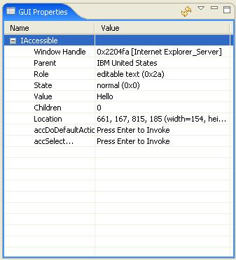
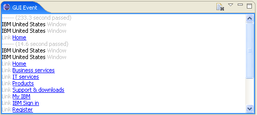
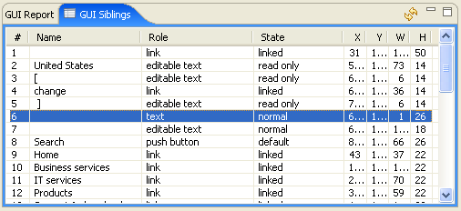

Exploring the GUI Accessibility perspective
You need to specify a target application window for the GUI accessibility check.
Target windows are classified into and shown in the following three menu categories.
Please select a window for the GUI accessibility check.
- (Title of the ACTF Browser Editor)
- The title of the webpage currently opened in the ACTF Browser Editor is displayed.
An accessibility check for this webpage will be performed if this item is selected.
- External Browsers
- Webpages currently open in external Web browsers (Microsoft® Internet Explorer or Mozilla Firefox) are displayed.
Any one of these webpages can be selected for an accessibility check.
- External Windows
- A list of other Windows® applications (besides browsers) with checkable windows appears.
Any one of these windows can be selected for the Accessibility check.

Figure 1. Target Window menu
Related functions
- Always on Top
- Show the tool on top of external applications.
The window of the tool is visible even if another application window is being used.
- Hide Embedded Browser Automatically
- If the Hide Embedded Browser Automatically option is selected, then the tool will automatically hide itself when an external window is selected and in use.
The GUI Accessibility views will start updating after a target window is selected.
The GUI Summary view will be the last one to be updated.

Figure 2. GUI Accessibility perspective
After GUI Accessibility views are ready, the following views of the accessibility check of the application are available.
GUI Summary view
The GUI Summary view shows accessible objects in a simple text page.
This view looks similar to the output of a screen reader.
The listenability of the application can be checked with synthesized speech using this text.
(Note: A Text-to-Speech engine supporting the Microsoft® Speech API 5.0 is required.)

Figure 3. GUI Summary view
Related functions
 Refresh (Shift+F10)
Refresh (Shift+F10)- Refresh the view to an up-to-date state.
 Read Entire Text (Shift+F10)
Read Entire Text (Shift+F10)- Read the entire page using speech synthesis.
 Stop Reading (Shift+F10)
Stop Reading (Shift+F10)- Stop reading the page.
- Show Off-Screen Items (Ctrl+F10)
- Show all items, including items that are not displayed on the screen.
- Show Flash Items Only (Ctrl+F10)
- Show only the items that are Flash applications.
- Preferences... (Ctrl+F10)
- Show GUI Accessibility preferences.
- Read from Here (Shift+F10)
- Start reading from the current line.
GUI Report view
This view automatically checks the accessibility problems of the application, and then shows a list of the problems.
This view investigates accessibility of application by checking the properties of MSAA to see whether or not alterative texts are defined, and shows appropriate Error, Warning, or Information messages.
For details of the automatic checking, please refer to Problems detected with GUI Accessibility perspective.

Figure 4. GUI Report view
Related functions
- Refresh (Shift+F10)
- Refresh the view to an up-to-date state.
- Show Report Icons on Screen
- Add error icons to the application screen.
- Show Error Report (Ctrl+F10)
- The error report is displayed in the view.
- Show Warning Report (Ctrl+F10)
- The warning report is displayed in the view.
- Show Information Report (Ctrl+F10)
- The information report is displayed on the view.
GUI Outline view
The GUI Outline view explores the structure of an MSAA object as a tree.
Application developers can inspect MSAA objects by using this view.
Selecting any tree item in this view highlights the actual position of the object.

Figure 5. GUI Outline view
Related functions
 Expand All
Expand All- Expand all items in the entire branch of the tree.
This may take a few moments.
 Collapse All
Collapse All- Collapse all items in that branch of the tree.
- Refresh (Shift+F10)
- Refresh the view to an up-to-date state.
- Go to GUI Report (Shift+F10)
- Execute the GUI accessibility check and go to the GUI Report view.
- Show Icons on Screen
- Add the tree icons for the current selection and its siblings to the application screen.
- Show Off-Screen Items (Ctrl+F10)
- Show all items, including the items that are not displayed on the screen.
- Show Flash Items Only (Ctrl+F10)
- Show only the items that are Flash applications.
- Expand All Children (Shift+F10)
- Expand all children under the current selection. This may take a few moments.
GUI Properties view
The GUI Properties view shows detailed information for the selected object in the GUI Outline view.
The information for the IAccessible2 interface will be shown in addition to the MSAA(IAccessible) interface information.
Application developers may analyze accessibility problems in detail by using this view.
The following properties are displayed in the GUI Properties view.
- IAccessible
- The properties of the MSAA interface are listed.
- IAccessible2
- The properties of the IAccessible2 interface are listed if the object supports an IAccessible2 interface.
In addition, the properties for the following IAccessible2 interfaces will be listed.
- IAccessibleAction
- IAccessibleApplication
- IAccessibleComponent
- IAccessibleEditableText
- IAccessibleHyperlink
- IAccessibleHypertext
- IAccessibleImage
- IAccessibleTable
- IAccessibleText
- IAccessibleValue

Figure 6. GUI Properties view
Related functions
- Refresh (Shift+F10)
- Refresh view up-to-date state.
- Show null Properties (Ctrl+F10)
- Show property even if value is null.
- Show Value Change with Color (Ctrl+F10)
- When property value is different from last value, property value is displayed with blue color text.
- Copy (Shift+F10)
- Copy the text of selected line into the clipboard.
- Invoke Method (Shift+F10)
- Invoke some method. Parameter input dialog will be displayed as necessary.
GUI Event view
The GUI Event view displays the MSAA/IAccessible2 events that have been triggered by the application.
When the Read Event Messages option is turned on, the text information for the event object will be spoken.
The listenability of the event can be verified using this function.
(Note: A Text-to-Speech engine supporting the Microsoft® Speech API 5.0 is required.)

Figure 7. GUI Event view
Related functions
 Clear (Shift+F10)
Clear (Shift+F10)- Clears the event log.
- Filter... (Ctrl+F10)
- Shows the GUI Event Filters dialog.
- Read Event Messages (Ctrl+F10)
- Read the accessible text when the event is triggered.
- Preferences... (Ctrl+F10)
- Show the GUI Accessibility preferences.
GUI List view
The GUI List view displays a list of the sibling objects currently selected in the GUI Outline view.

Figure 8. GUI List view
Related functions
- Refresh (Shift+F10)
- Refresh the view to an up-to-date state.
Go to Index
Microsoft, Windows, Windows NT, and the Windows logo are trademarks of Microsoft Corporation in the United States, other countries, or both.